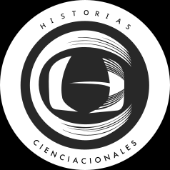

Comunicación de la ciencia
Mis actividades de comunicación de la ciencia las realizo de forma independiente. Generalmente a través de mi plataforma Historias Cienciacionales y como invitado en diversos medios, donde abordo un tema en específico.
Historias Cienciacionales

Historias Cienciacionale es una plataforma de comunicación de la ciencia en español, dirigida al público latinoamericano. En 2014 la desarrollé y fundé juntó con dos colegas científicos y comunicadores de la ciencia: Sofía Flores y Victor Hernández. Nuestro propósito es contribuir a la difusión de la ciencia de una manera entretenida, rigurosa y sencilla.
Abordamos investigaciones cinetíficas recientes, dese la frontera de la ciencia y de distintos campos del conocimiento. Es frecuente que entrevistemos a los investigadores que protagonizan dichas investigaciones. Nuestro material lo distribuimos a través de posts en Instagram y a través de un podcast en diversas plataformas.
¡Checa una de nuestras breves de Instagram! 👇
<blockquote class="instagram-media" data-instgrm-permalink="https://www.instagram.com/p/CgzKVrLukfV/?utm_source=ig_web_button_share_sheet&igshid=MzRlODBiNWFlZA==" data-instgrm-version="13"></blockquote>
Historias cienciacionales: el podcast
Este proyecto inició en 2014 en el Instituo Mexicano de la Radio. Ahí producimos el podcast por dos años y posteriormente lo realizamos de forma independiente. Hoy día cuenta con +200 episodios en cuatro temporadas, donde hemos contado con +250 investigadores mexicanos e internacionales, de +50 instituciones.
¡Escucha nuestros episodios por Soundcloud o Spotify! 👇
Publicaciones relevantes en medios
En 2020. Nexos. En colaboración con la Dra. Cristina Ayala. Breve revisión histórica de las consecuencias de los mega proyectos turísticos en la península de Yucatán. La nota fue de las más leídas ese año.
- Ayala-Azcárraga, C. y Pacheco-Muñoz, Rodrigo. Desarrollar la península, perpetuar pobreza. Nexos, Crisis ambiental - Impactos y Deterioro, 2020.
Presencia en medios
INFOBAE, 2023. La nota explica las razones de las inundaciones en le CDMX con base en nuestra investigación al respecto.
La Jornada Morelos. Tenga para que se entretenga, 2023. La nota aborda nuestra investigación sobre el uso de ciencia ciudadana para el seguimiento de especies invasoras.
EpiSTEMas. 2022. Podcast de comunicación de la ciencia donde me entrevistan sobre mi trabajo y sobre la perspectivas con las que abordo el entendimiento de las ciudades.
BBC. Futures, 2022. La nota habla sobre la migración de aves y su relación con la urbanización en el continente de América, a través de entrevistas a científicos que las estudiamos a lo largo de su trayecto migratorio. La nota aborda mi investigación sobre aves migratorias, donde comprobé que las ciudades pueden ofrecer hábitat de calidad a algunas especies. Este hallazgo es pionero en su campo.
WRADIO. Así las cosas, 2022. Participé en el programa de radio matutino con una intervención acerca del daño que puede representar que los cuervos se entrenen para recoger colillas. Esto también derivó en una nota escrita:
MVS Noticias. Pamela Cerdeira, 2022. En mi intervención ofrecí hipótesis sobre las causas de un evento de muerte masiva de tordos de cabeza amarila (Xanthocephalus xanthocephalus).
Mención relevante
- En 2015 realicé un video apreciativo del Axolote (Ambystoma mexicanum). El video lo realicé durante la etapa piloto del proyecto que planteó un refugio urbano en la Cantera Oriente de Ciudad Universitaria de la UNAM. El proyecto de refugios en la cantera aún continua realizándolo el Laboratorio de Restauración Ecológica.